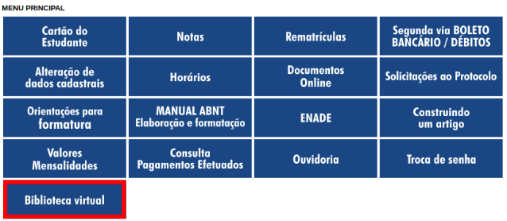
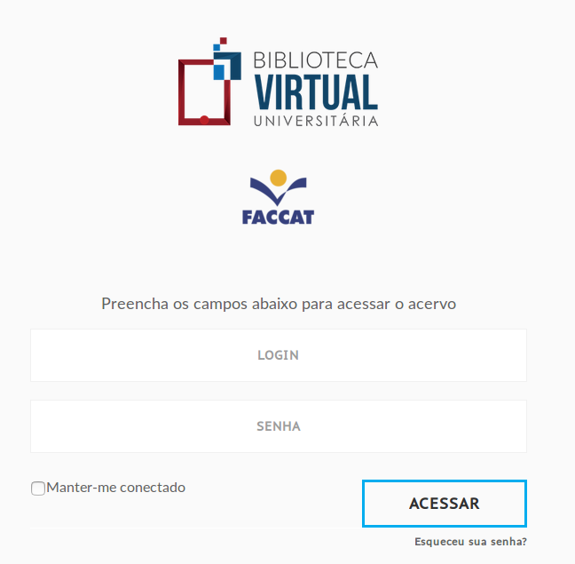

Biblioteca Virtual
Portal de Periódicos CAPES/MEC
Horário de Funcionamento
Regulamento da Biblioteca
Multas
Perguntas Frequentes
Pós-Graduação
Bibliotecária Responsável
BIBLIOTECA VIRTUAL
Além do acervo físico da Biblioteca Eldo Ivo Klain, o acadêmico pode acessar, no Portal do Aluno, obras de várias áreas do conhecimento.
1. Quem pode acessar a Biblioteca Virtual?
Todos os alunos, com matrículas ativas, podem acessar Biblioteca Virtual.
2. Como acessar a Biblioteca Virtual?
Para acessar o Biblioteca Virtual, o aluno deve fazer o login no Portal do Aluno e clicar no botão "Biblioteca Virtual" como é mostrado em destaque na figura abaixo.

3. Caso um professor tenha me passado o link para um livro da Biblioteca Virtual, como eu faço para acessar?
Exemplo de link : http://faccat.bv3.digitalpages.com.br/users/publications/9788532641830
Ao clicar no link, o aluno é direcionado para a página da Biblioteca Virtual (Figura abaixo), onde é solicitado usuário e senha. Esses campos devem ser preenchidos com seus dados de acesso, ou seja, login (CPF) e senha (CPF).
Importante: Só é possível fazer o login por meio de um link se, nos últimos 30 dias, o aluno tenha acessado a Biblioteca Virtual. Caso contrário, terá que fazer o acesso primeiro pelo Portal do Aluno, como mostrado na Pergunta 2 (2. Como acessar a Biblioteca Virtual?).

4. Por quanto tempo posso acessar a Biblioteca Virtual?
No caso do aluno não acessar a Biblioteca Virtual por mais de 30 dias, esse será excluído e sua vaga destinada a outro acadêmico. Poderá acessar, novamente, se fizer todo o procedimento descrito na Pergunta 2 (2. Como acessar a Biblioteca Virtual?).